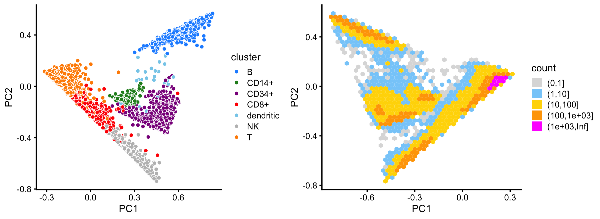
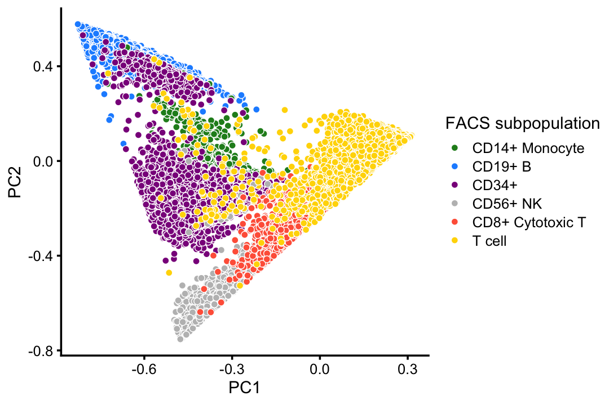
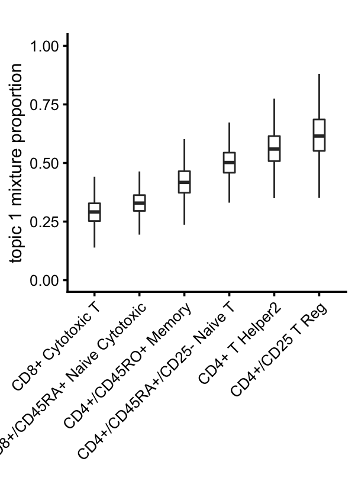
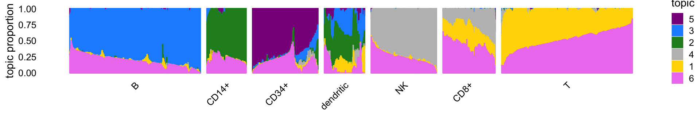
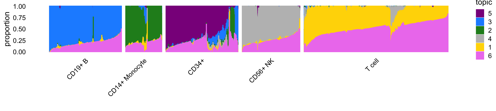

Last updated: 2021-01-05
Checks: 7 0
Knit directory: single-cell-topics/analysis/
This reproducible R Markdown analysis was created with workflowr (version 1.6.2.9000). The Checks tab describes the reproducibility checks that were applied when the results were created. The Past versions tab lists the development history.
Great! Since the R Markdown file has been committed to the Git repository, you know the exact version of the code that produced these results.
Great job! The global environment was empty. Objects defined in the global environment can affect the analysis in your R Markdown file in unknown ways. For reproduciblity it’s best to always run the code in an empty environment.
The command set.seed(1) was run prior to running the code in the R Markdown file. Setting a seed ensures that any results that rely on randomness, e.g. subsampling or permutations, are reproducible.
Great job! Recording the operating system, R version, and package versions is critical for reproducibility.
Nice! There were no cached chunks for this analysis, so you can be confident that you successfully produced the results during this run.
Great job! Using relative paths to the files within your workflowr project makes it easier to run your code on other machines.
Great! You are using Git for version control. Tracking code development and connecting the code version to the results is critical for reproducibility.
The results in this page were generated with repository version 0d58849. See the Past versions tab to see a history of the changes made to the R Markdown and HTML files.
Note that you need to be careful to ensure that all relevant files for the analysis have been committed to Git prior to generating the results (you can use wflow_publish or wflow_git_commit). workflowr only checks the R Markdown file, but you know if there are other scripts or data files that it depends on. Below is the status of the Git repository when the results were generated:
Ignored files:
Ignored: data/droplet.RData
Ignored: data/pbmc_68k.RData
Ignored: data/pbmc_purified.RData
Ignored: data/pulseseq.RData
Ignored: output/droplet/diff-count-droplet.RData
Ignored: output/droplet/fits-droplet.RData
Ignored: output/droplet/rds/
Ignored: output/pbmc-68k/fits-pbmc-68k.RData
Ignored: output/pbmc-68k/rds/
Ignored: output/pbmc-purified/diff-count-pbmc-purified.RData
Ignored: output/pbmc-purified/fits-pbmc-purified.RData
Ignored: output/pbmc-purified/rds/
Ignored: output/pulseseq/diff-count-pulseseq.RData
Ignored: output/pulseseq/fits-pulseseq.RData
Ignored: output/pulseseq/rds/
Untracked files:
Untracked: analysis/clustering-pbmc-purified.rds
Untracked: plots/
Unstaged changes:
Modified: analysis/loglik_purified_pbmc.Rmd
Modified: analysis/plots_purified_pbmc.Rmd
Note that any generated files, e.g. HTML, png, CSS, etc., are not included in this status report because it is ok for generated content to have uncommitted changes.
These are the previous versions of the repository in which changes were made to the R Markdown (analysis/clusters_purified_pbmc.Rmd) and HTML (docs/clusters_purified_pbmc.html) files. If you’ve configured a remote Git repository (see ?wflow_git_remote), click on the hyperlinks in the table below to view the files as they were in that past version.
| File | Version | Author | Date | Message |
|---|---|---|---|---|
| Rmd | 0d58849 | Peter Carbonetto | 2021-01-05 | workflowr::wflow_publish(“clusters_purified_pbmc.Rmd”) |
| Rmd | 12e7154 | Peter Carbonetto | 2021-01-04 | Minor edit. |
| html | a7c641f | Peter Carbonetto | 2021-01-04 | Fixed PCA plot in clusters_purified_pbmc analysis showing FACS |
| Rmd | 742b1c3 | Peter Carbonetto | 2021-01-04 | workflowr::wflow_publish(“clusters_purified_pbmc.Rmd”) |
| html | 97c9bec | Peter Carbonetto | 2021-01-03 | Adjusted Structure plot in clusters_purified_pbmc analysis. |
| Rmd | dc46e8e | Peter Carbonetto | 2021-01-03 | workflowr::wflow_publish(“clusters_purified_pbmc.Rmd”, verbose = TRUE) |
| html | b137aaa | Peter Carbonetto | 2021-01-03 | Reworked clusters_purified_pbmc analysis, and added second Structure plot. |
| Rmd | 113614e | Peter Carbonetto | 2021-01-03 | workflowr::wflow_publish(“clusters_purified_pbmc.Rmd”) |
| html | edaec3f | Peter Carbonetto | 2021-01-03 | Build site. |
| Rmd | 6e77a95 | Peter Carbonetto | 2021-01-03 | workflowr::wflow_publish(“clusters_purified_pbmc.Rmd”) |
| Rmd | 517d00f | Peter Carbonetto | 2021-01-03 | Re-organized the R Markdown a bit. |
| Rmd | 2d71c87 | Peter Carbonetto | 2020-12-30 | Did some re-organizing. |
| html | 9ecb991 | Peter Carbonetto | 2020-12-29 | Build site. |
| html | 5712896 | Peter Carbonetto | 2020-12-29 | Build site. |
| Rmd | 809d0a1 | Peter Carbonetto | 2020-12-29 | workflowr::wflow_publish(“clusters_purified_pbmc.Rmd”, verbose = TRUE) |
| html | 761d2c0 | Peter Carbonetto | 2020-11-29 | Fixed loadings plot in clusters_purified_pbmc analysis. |
| Rmd | 674817c | Peter Carbonetto | 2020-11-29 | workflowr::wflow_publish(“clusters_purified_pbmc.Rmd”) |
| html | aa73ee1 | Peter Carbonetto | 2020-11-29 | Working on adding loadings plot to clusters_purified_pbmc analysis. |
| Rmd | ed4dd7b | Peter Carbonetto | 2020-11-29 | workflowr::wflow_publish(“clusters_purified_pbmc.Rmd”) |
| html | c8fb5be | Peter Carbonetto | 2020-11-29 | Improved PCA expression plots in clusters_purified_pbmc analysis. |
| Rmd | 95f7750 | Peter Carbonetto | 2020-11-29 | workflowr::wflow_publish(“clusters_purified_pbmc.Rmd”) |
| html | a42db50 | Peter Carbonetto | 2020-11-28 | Added PCA expression plots to clusters_purified_pbmc analysis. |
| Rmd | 2de8504 | Peter Carbonetto | 2020-11-28 | workflowr::wflow_publish(“clusters_purified_pbmc.Rmd”) |
| html | 07f6bca | Peter Carbonetto | 2020-11-28 | Made a few minor improvements to the PCA vs. t-SNE + UMAP demo. |
| Rmd | 82b549f | Peter Carbonetto | 2020-11-28 | workflowr::wflow_publish(“clusters_purified_pbmc.Rmd”) |
| html | 3501298 | Peter Carbonetto | 2020-11-28 | Improved Structure plot for purified PBMC data. |
| Rmd | 1f52a7c | Peter Carbonetto | 2020-11-28 | workflowr::wflow_publish(“clusters_purified_pbmc.Rmd”) |
| html | f7e773e | Peter Carbonetto | 2020-11-28 | Build site. |
| Rmd | 31103b8 | Peter Carbonetto | 2020-11-28 | workflowr::wflow_publish(“clusters_purified_pbmc.Rmd”) |
| html | 4781407 | Peter Carbonetto | 2020-11-28 | Made some improvements to the PCA plots in clusters_purified_pbmc. |
| Rmd | 80787eb | Peter Carbonetto | 2020-11-28 | workflowr::wflow_publish(“clusters_purified_pbmc.Rmd”) |
| Rmd | 605ee92 | Peter Carbonetto | 2020-11-28 | Added steps to create PCA plots for paper in clusters_pbmc_purified analysis. |
| Rmd | 39015bd | Peter Carbonetto | 2020-11-28 | Cluster A in PBMC data = dendritic cells. |
| html | 48438b3 | Peter Carbonetto | 2020-11-26 | Added a cluster to the purified PBMC clustering. |
| Rmd | 989e7ac | Peter Carbonetto | 2020-11-26 | workflowr::wflow_publish(“clusters_purified_pbmc.Rmd”) |
| html | c85de93 | Peter Carbonetto | 2020-11-23 | Build site. |
| Rmd | 9389b77 | Peter Carbonetto | 2020-11-23 | workflowr::wflow_publish(“clusters_purified_pbmc.Rmd”) |
| html | e7411a0 | Peter Carbonetto | 2020-11-23 | Added plots comparing PCA with t-SNE and UMAP in |
| Rmd | 9167310 | Peter Carbonetto | 2020-11-23 | workflowr::wflow_publish(“clusters_purified_pbmc.Rmd”) |
| html | 8abec44 | Peter Carbonetto | 2020-11-23 | Added PCA plots to clusters_purified_pbmc analysis. |
| Rmd | a7e6fbc | Peter Carbonetto | 2020-11-23 | Various improvements to the analysis of the PBMC data sets. |
| Rmd | 884b869 | Peter Carbonetto | 2020-11-23 | Working on new plots for clusters_purified_pbmc analysis. |
| Rmd | 4a8b2bd | Peter Carbonetto | 2020-11-23 | A couple additions to clusters_purified_pbmc.Rmd. |
| html | 1845721 | Peter Carbonetto | 2020-11-22 | Added Structure plot to clusters_purified_pbmc. |
| Rmd | 90d201b | Peter Carbonetto | 2020-11-22 | workflowr::wflow_publish(“clusters_purified_pbmc.Rmd”) |
| html | 015e254 | Peter Carbonetto | 2020-11-22 | Fixed up some of the text and plots in clusters_purified_pbmc analysis. |
| Rmd | b512864 | Peter Carbonetto | 2020-11-22 | workflowr::wflow_publish(“clusters_purified_pbmc.Rmd”) |
| html | 7cbd5e9 | Peter Carbonetto | 2020-11-22 | First build of clusters_purified_pbmc page. |
| Rmd | 4e32884 | Peter Carbonetto | 2020-11-22 | workflowr::wflow_publish(“clusters_purified_pbmc.Rmd”) |
Here we identify clusters of cells from the mixture proportions estimated in the mixture of FACS-purified PBMC data.
Load the packages used in the analysis below, as well as additional functions that we will use to generate some of the plots.
library(Matrix)
library(fastTopics)
library(ggplot2)
library(cowplot)Load the count data.
load("../data/pbmc_purified.RData")
table(samples$celltype)
#
# CD19+ B CD14+ Monocyte
# 10085 2612
# CD34+ CD4+ T Helper2
# 9232 11213
# CD56+ NK CD8+ Cytotoxic T
# 8385 10209
# CD4+/CD45RO+ Memory CD8+/CD45RA+ Naive Cytotoxic
# 10224 11953
# CD4+/CD45RA+/CD25- Naive T CD4+/CD25 T Reg
# 10479 10263Load the \(K = 6\) Poisson NMF model fit.
fit <- readRDS(file.path("../output/pbmc-purified/rds",
"fit-pbmc-purified-scd-ex-k=6.rds"))$fit
fit <- poisson2multinom(fit)From the PCs of the mixture proportions, we define clusters for B cells, CD14+ cells and CD34+ cells. The remaining cells are assigned to the U cluster (“U” for “unknown”).
pca <- prcomp(fit$L)$x
n <- nrow(pca)
x <- rep("U",n)
pc1 <- pca[,1]
pc2 <- pca[,2]
pc3 <- pca[,3]
pc4 <- pca[,4]
pc5 <- pca[,5]
x[pc2 > 0.25] <- "B"
x[pc3 < -0.2 & pc4 < 0.2] <- "CD34+"
x[(pc4 + 0.1)^2 + (pc5 - 0.8)^2 < 0.07] <- "CD14+"Next, we define clusters for NK cells and dendritic cells from the top 2 PCs of the mixture proportions in the U cluster.
rows <- which(x == "U")
n <- length(rows)
fit2 <- select_loadings(fit,loadings = rows)
pca <- prcomp(fit2$L)$x
y <- rep("U",n)
pc1 <- pca[,1]
pc2 <- pca[,2]
pc3 <- pca[,3]
pc4 <- pca[,4]
y[pc1 < -0.3 & 1.1*pc1 < -pc2 - 0.57] <- "NK"
y[pc3 > 0.4 & pc4 < 0.2] <- "dendritic"
x[rows] <- yAmong the remaining cells, we define a cluster for CD8+ cells, noting that this is much less distinct than the other cells. The rest are labeled as T cells.
rows <- which(x == "U")
n <- length(rows)
fit2 <- select_loadings(fit,loadings = rows)
pca <- prcomp(fit2$L)$x
y <- rep("T",n)
pc1 <- pca[,1]
pc2 <- pca[,2]
y[pc1 < 0.25 & pc2 < -0.15] <- "CD8+"
x[rows] <- yIn summary, we have subdivided the cells into 7 subsets:
samples$cluster <- factor(x)
table(samples$cluster)
#
# B CD14+ CD34+ CD8+ dendritic NK T
# 10439 2956 8237 3757 308 8380 60578This plot shows the clustering of the cells projected onto the top two PCs:
cluster_colors <- c("dodgerblue", # B cells
"forestgreen", # CD14+
"darkmagenta", # CD34+
"red", # CD8+
"skyblue", # dendritic
"gray", # NK
"darkorange") # T cells
p1 <- pca_plot(fit,fill = samples$cluster) +
scale_fill_manual(values = cluster_colors) +
labs(fill = "cluster")
p2 <- pca_hexbin_plot(fit)
plot_grid(p1,p2,rel_widths = c(10,11))
This clustering corresponds well to the Zheng et al (2017) FACS cell populations, although there are some differences.
with(samples,table(celltype,cluster))
# cluster
# celltype B CD14+ CD34+ CD8+ dendritic NK T
# CD19+ B 10073 0 0 3 7 0 2
# CD14+ Monocyte 8 2420 0 3 156 0 25
# CD34+ 352 536 8182 20 121 4 17
# CD4+ T Helper2 0 0 8 45 9 1 11150
# CD56+ NK 0 0 17 82 4 8279 3
# CD8+ Cytotoxic T 0 0 0 3146 0 93 6970
# CD4+/CD45RO+ Memory 0 0 20 355 1 0 9848
# CD8+/CD45RA+ Naive Cytotoxic 3 0 0 52 2 2 11894
# CD4+/CD45RA+/CD25- Naive T 1 0 8 27 5 1 10437
# CD4+/CD25 T Reg 2 0 2 24 3 0 10232Compare the FACS subpopulations projected onto the top two PCs with the clustering in the PCA plot above:
facs_colors <- c("forestgreen", # CD14+
"dodgerblue", # B cells
"darkmagenta", # CD34+
"gray", # NK cells
"tomato", # cytotoxic T cells
"gold") # T cells
celltype <- as.character(samples$celltype)
celltype[celltype == "CD4+ T Helper2" |
celltype == "CD4+/CD45RO+ Memory" |
celltype == "CD8+/CD45RA+ Naive Cytotoxic" |
celltype == "CD4+/CD45RA+/CD25- Naive T" |
celltype == "CD4+/CD25 T Reg"] <- "T cell"
celltype <- factor(celltype)
p3 <- pca_plot(fit,fill = celltype) +
scale_fill_manual(values = facs_colors) +
labs(fill = "FACS subpopulation")
print(p3)
The continuous variation in T cells captured by topics 1 and 6 suggests CD4+/CD8+ lineage differentiation in T cells:
x <- samples$celltype
i <- names(sort(tapply(fit$L[,1],x,mean)))
x <- factor(as.character(x),i)
rows <- which(!(samples$celltype == "CD19+ B" |
samples$celltype == "CD14+ Monocyte" |
samples$celltype == "CD34+" |
samples$celltype == "CD56+ NK"))
p4 <- loadings_plot(select_loadings(fit,loadings = rows),x = x[rows],k = 1) +
scale_y_continuous(limits = c(0,1)) +
labs(y = "topic 1 mixture proportion",title = "")
print(p4)
| Version | Author | Date |
|---|---|---|
| edaec3f | Peter Carbonetto | 2021-01-03 |
The Structure plot summarizes the mixture proportions in each of the 7 clusters:
set.seed(1)
topic_colors <- c("gold","forestgreen","dodgerblue","gray",
"darkmagenta","violet")
topics <- c(5,3,2,4,1,6)
x <- samples$cluster
x <- factor(x,c("B","CD14+","CD34+","dendritic","NK","CD8+","T"))
rows <- sort(c(sample(which(x == "B"),1000),
sample(which(x == "CD14+"),300),
sample(which(x == "CD34+"),500),
sample(which(x == "CD8+"),400),
sample(which(x == "NK"),500),
sample(which(x == "T"),1000),
which(samples$cluster == "dendritic")))
p5 <- structure_plot(select_loadings(fit,loadings = rows),
grouping = x[rows],topics = topics,
colors = topic_colors[topics],
perplexity = c(70,30,30,30,30,30,70),n = Inf,gap = 50,
num_threads = 4,verbose = FALSE)
print(p5)
This Structure plot summarizes the correspondence between the topics and the FACS cell populations. It shows the FACS mislabeling of the CD34+ cells.
set.seed(1)
celltype <- factor(celltype,c("CD19+ B","CD14+ Monocyte","CD34+",
"CD56+ NK","CD8+ Cytotoxic T","T cell"))
rows <- sort(c(sample(which(celltype == "CD19+ B"),500),
sample(which(celltype == "CD14+ Monocyte"),250),
sample(which(celltype == "CD34+"),500),
sample(which(celltype == "CD56+ NK"),400),
sample(which(celltype == "CD8+ Cytotoxic T"),400),
sample(which(celltype == "T cell"),1000)))
p6 <- structure_plot(select_loadings(fit,loadings = rows),
grouping = celltype[rows],
topics = topics,colors = topic_colors[topics],
perplexity = c(70,30,30,30,30,70),n = Inf,gap = 30,
num_threads = 4,verbose = FALSE)
print(p6)
Save the clustering of the PBMC data to an RDS file.
saveRDS(samples,"clustering-pbmc-purified.rds")
sessionInfo()
# R version 3.6.2 (2019-12-12)
# Platform: x86_64-apple-darwin15.6.0 (64-bit)
# Running under: macOS Catalina 10.15.7
#
# Matrix products: default
# BLAS: /Library/Frameworks/R.framework/Versions/3.6/Resources/lib/libRblas.0.dylib
# LAPACK: /Library/Frameworks/R.framework/Versions/3.6/Resources/lib/libRlapack.dylib
#
# locale:
# [1] en_US.UTF-8/en_US.UTF-8/en_US.UTF-8/C/en_US.UTF-8/en_US.UTF-8
#
# attached base packages:
# [1] stats graphics grDevices utils datasets methods base
#
# other attached packages:
# [1] cowplot_1.0.0 ggplot2_3.3.0 fastTopics_0.4-13 Matrix_1.2-18
#
# loaded via a namespace (and not attached):
# [1] ggrepel_0.9.0 Rcpp_1.0.5 lattice_0.20-38
# [4] tidyr_1.0.0 prettyunits_1.1.1 assertthat_0.2.1
# [7] zeallot_0.1.0 rprojroot_1.3-2 digest_0.6.23
# [10] R6_2.4.1 backports_1.1.5 MatrixModels_0.4-1
# [13] evaluate_0.14 coda_0.19-3 httr_1.4.2
# [16] pillar_1.4.3 rlang_0.4.5 progress_1.2.2
# [19] lazyeval_0.2.2 data.table_1.12.8 irlba_2.3.3
# [22] SparseM_1.78 hexbin_1.28.0 whisker_0.4
# [25] rmarkdown_2.3 labeling_0.3 Rtsne_0.15
# [28] stringr_1.4.0 htmlwidgets_1.5.1 munsell_0.5.0
# [31] compiler_3.6.2 httpuv_1.5.2 xfun_0.11
# [34] pkgconfig_2.0.3 mcmc_0.9-6 htmltools_0.4.0
# [37] tidyselect_0.2.5 tibble_2.1.3 workflowr_1.6.2.9000
# [40] quadprog_1.5-8 viridisLite_0.3.0 crayon_1.3.4
# [43] dplyr_0.8.3 withr_2.1.2 later_1.0.0
# [46] MASS_7.3-51.4 grid_3.6.2 jsonlite_1.6
# [49] gtable_0.3.0 lifecycle_0.1.0 git2r_0.26.1
# [52] magrittr_1.5 scales_1.1.0 RcppParallel_4.4.2
# [55] stringi_1.4.3 farver_2.0.1 fs_1.3.1
# [58] promises_1.1.0 vctrs_0.2.1 tools_3.6.2
# [61] glue_1.3.1 purrr_0.3.3 hms_0.5.2
# [64] yaml_2.2.0 colorspace_1.4-1 plotly_4.9.2
# [67] knitr_1.26 quantreg_5.54 MCMCpack_1.4-5